◦ Case study 02 · Niyuk HR · 2026
Making HR easy for Employee B2B
Designing a HR SaaS to replace five disconnected tools for every company that uses it.
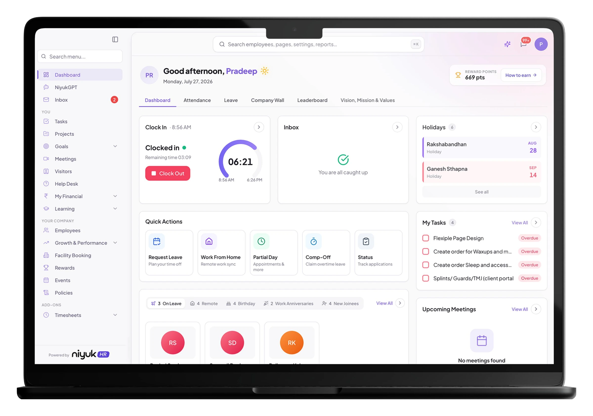
◦ Overview
Project overview
Most companies stitch together a workday out of disconnected tools—one for attendance, another for leave, a spreadsheet for payslips, a separate tracker for projects, and no shared home for company culture at all.
I designed Niyuk HR, a multi-tenant employee SaaS platform that any organization can deploy to consolidate attendance, leave, tasks, projects, meetings, finances, and recognition into one connected workspace—white-labeled per company (shown here running as Sphinx Solutions' instance), and built to be opened in the first five seconds of a workday and get out of the way just as fast.
◦ The problem
The challenge
Across the companies Niyuk HR was designed for, employees faced the same fragmented reality, just with different tool names attached.
Scattered data
Attendance, leave, payslips, and project status each lived in a separate system with no shared source of truth.
No comprehensive home
There was no single place an employee could check their day—tasks, requests, finances, and team updates all required switching tools.
Clocking in was a chore
A two-second action—clock in, clock out—required navigating an unclear flow, with no visibility into daily hours or arrival status.
Untraceable requests
Leave, WFH, and regularization requests had no visible approval trail, so employees and managers followed up manually to check status.
No moment of “company”
Recognition, birthdays, and work anniversaries had no home in the product, so culture-building depended on manual Slack messages.
One-size-fits-none HR tools
Off-the-shelf HRMS tools were either too rigid for a company's actual policies (leave types, approval hierarchies) or too enterprise-heavy for smaller teams to configure.
◦ Voice of the user
Pain points
“To apply for leave and work from home, you need to send emails.”
“Good attendance and strong performance went unnoticed due to the old systems not tracking it.”
“No visibility into their salary breakdown without emailing HR.”
“I need to check my emails for salary slips and the salary breakdown.”
“It's hard to find out who is on leave, remote, or celebrating a birthday without asking.”
“No way to track their own learning or growth progress.”
◦ Research & discovery
Understanding how a workday really flows
To move beyond assumptions, I mapped how employees at client organizations actually moved through a workday across their old, disconnected tools: where they opened each system, what they were checking for, and where they gave up and asked a manager or HR directly instead. Because Niyuk HR needed to work for many organizations, not one, this also meant identifying which parts of the experience had to be configurable per company (leave policies, approval chains, branding) versus which parts could stay fixed.
Three core personas emerged
The Desk Employee
Checks in each morning, manages tasks and projects throughout the day, and cares most about frictionless attendance and clear task ownership.
The Field / Hybrid Employee
Relies heavily on Work From Home and Partial Day requests, and needs approval status to be visible without chasing a manager.
The Manager / Approver
Sits inside multiple approval chains (leave, WFH, regularization) across their reports and needs request context at a glance rather than a separate email thread per request.
“I never knew if my leave & WFH request actually got approved until I check my email inbox.”Rahul Singh, Software Engineer
◦ Key findings
What the research revealed
Following stakeholder interviews with product managers and employees, I identified several key findings that require attention.
The user reality
Employees were opening three to five separate tools a day just to complete routine actions like clocking in, requesting leave, or checking a payslip.
Frequency drove hierarchy
Attendance and quick requests happened daily; policies, tax declarations, and performance reviews happened rarely, so the two needed completely different levels of prominence in the product.
Trust required visibility
The biggest source of friction wasn't the request itself, it was not knowing where a request stood, who it was waiting on, or when it would be resolved.
Configurability without complexity
Each client organization has unique leave types, approval hierarchies, and branding, but the core interaction patterns (status badges, approval chains, request tables) must remain consistent to ensure the product scales across tenants without needing redesigns.
◦ Solution strategy
Proposed solution
To serve any organization deploying it, I designed a centralized, white-labelable platform built on four pillars:
A unified attendance hub
A single Attendance tab combining live clock in/out, a weekly timing strip with a real-time shift-progress bar, and a 30-day log with a visual timeline per day—replacing a login-and-hope experience with an at-a-glance daily status, regardless of which company's instance an employee is on.
Transparent, chained requests
Every request type (Work From Home, Partial Day, Regularization, Comp-Off, Leave) shares one table format showing status and a compact approval-chain breadcrumb (Approver → Approver), so an employee can see exactly who a request is waiting on without a follow-up message, and admins can configure approval hierarchies per organization without touching the UI pattern itself.
An integrated work layer
Tasks, Projects, Meetings, and Help Desk live inside the same app as attendance and leave, using drawer-panel creation flows (not page redirects) so employees never lose context switching between HR actions and daily work.
A built-in culture layer
Company Wall, a points-based Leaderboard, and an auto-populated feed of birthdays and work anniversaries—designed so recognition happens by default per organization, not by someone remembering to organize it, and so each client's instance still feels like their own company rather than a generic template.
◦ Design process
From research to production
After mapping the fragmented multi-tool journey common across client organizations, I moved directly into task flows for the highest-frequency actions—clock in/out, leave request, and raising a support ticket. Breaking these into step-by-step actions surfaced exactly where employees were losing time or context, which set the direction for the information architecture: daily actions (Dashboard, Attendance) had to sit above the fold, while lower-frequency modules (Policies, Growth & Performance, Tax Declaration) could live one click deeper in the sidebar—a hierarchy designed to hold true whether an organization has 20 employees or 2,000.
User flows and ideation
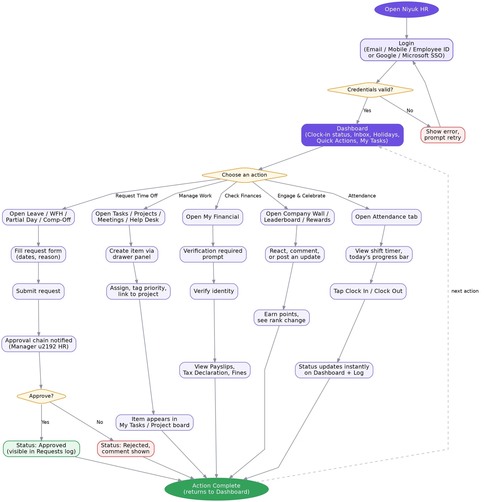
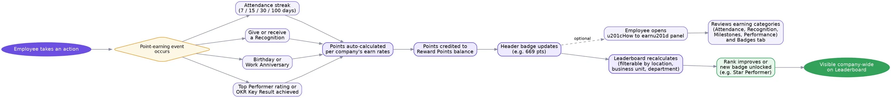
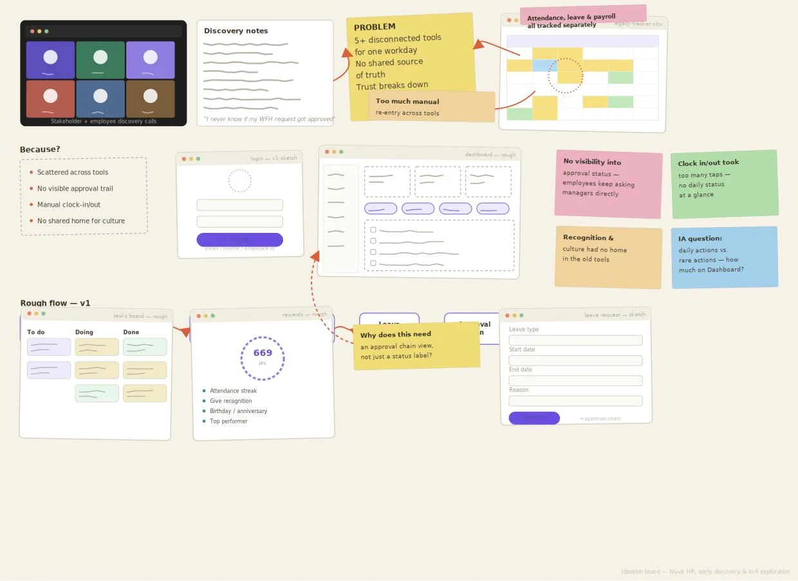
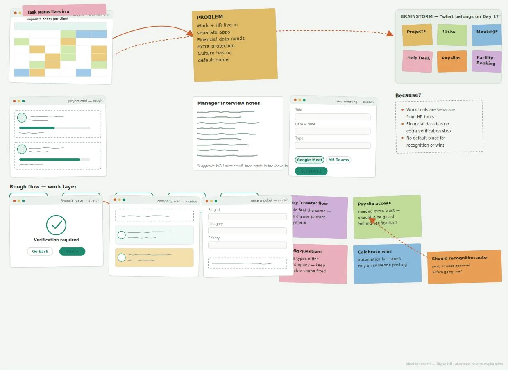
◦ Sketching & wireframes
From concept to structure
Task flow breakdowns revealed the highest-impact opportunities for simplification. I translated these into quick sketches to explore layout, hierarchy, and interaction patterns before moving into high-fidelity design.
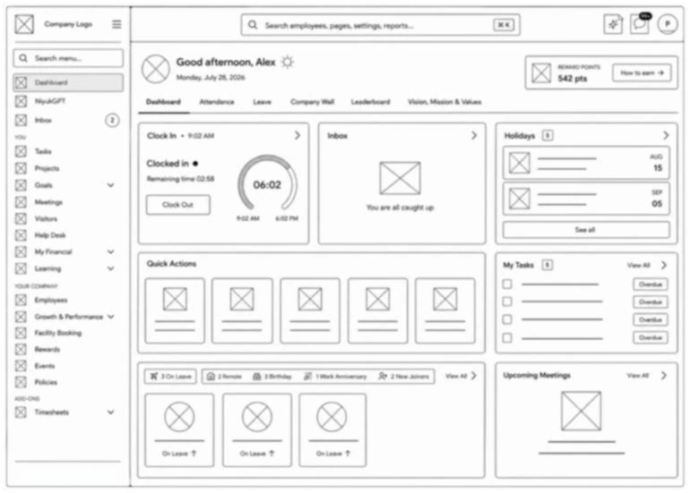
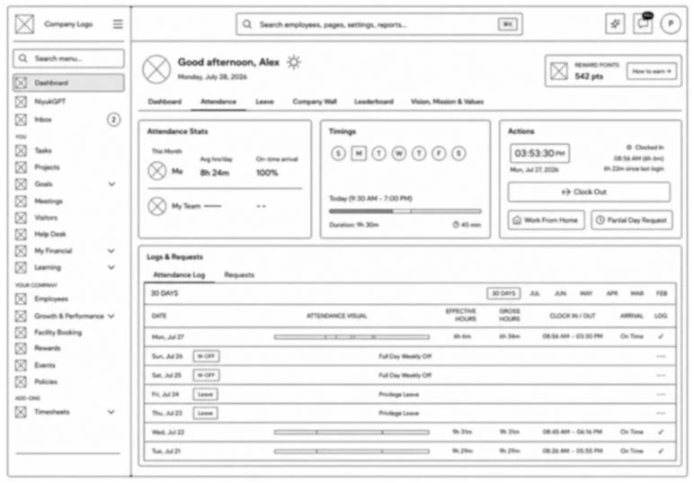
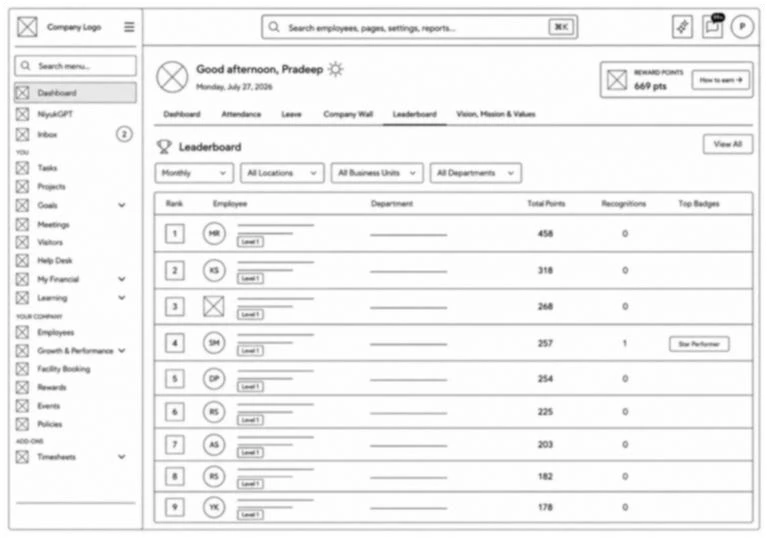
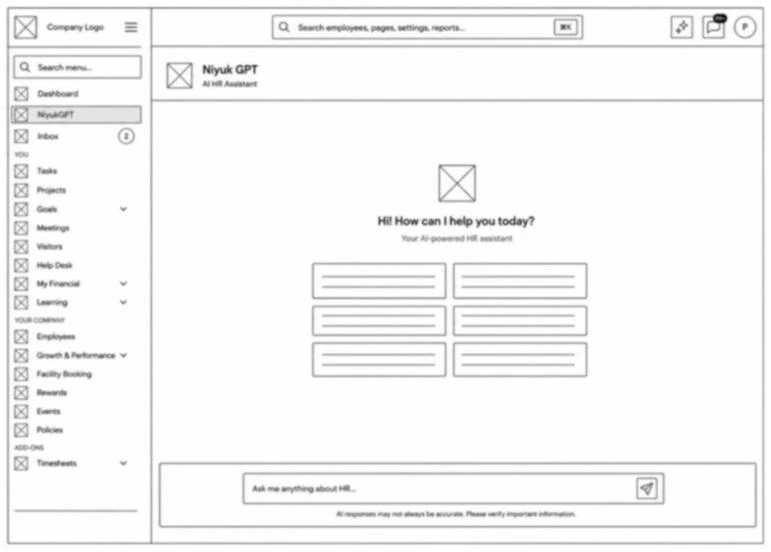
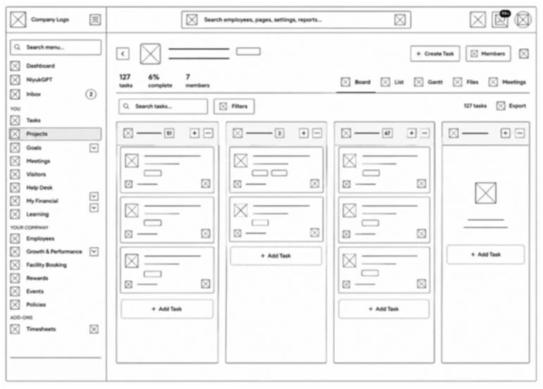
◦ High fidelity design
The dashboard
Resulting experience
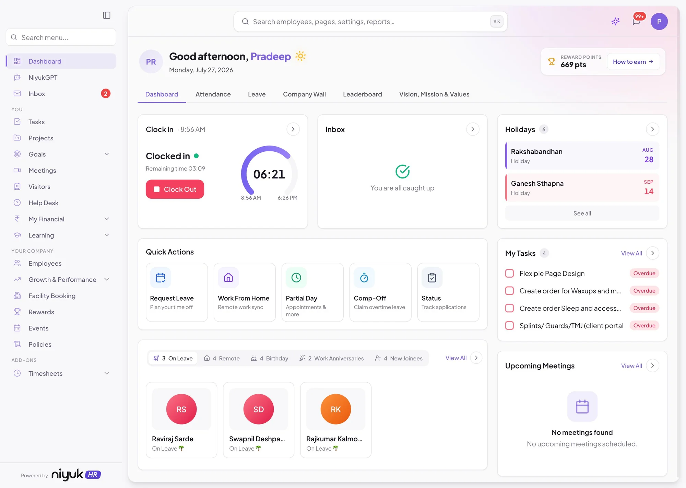
Clock in / clock out
Employees can easily check in and check out and track their work hours for the day.
Quick action buttons
Easy to request leave, WFH, Partial Day, or Comp-Off from here.
Quick updates
Employees can see who is on leave or working remotely, plus birthdays and work anniversaries.
Reward points
Upfront reward points section to keep employees motivated.
Holidays
Employees can view upcoming holidays and plan their leaves accordingly.
Task tracking
Employees can track their task status and plan their day accordingly.
Meeting calendar
Upfront meetings list so you don't have to set reminders.
Resulting experience
Clock in / clock out
Employees can easily check in and check out and track their work hours for the day.
Quick action buttons
Easy to request leave, WFH, Partial Day, or Comp-Off from here.
Quick updates
Employees can see who is on leave or working remotely, plus birthdays and work anniversaries.
Reward points
Upfront reward points section to keep employees motivated.
Holidays
Employees can view upcoming holidays and plan their leaves accordingly.
Task tracking
Employees can track their task status and plan their day accordingly.
Meeting calendar
Upfront meetings list so you don't have to set reminders.
◦ High fidelity design
Attendance
Resulting experience
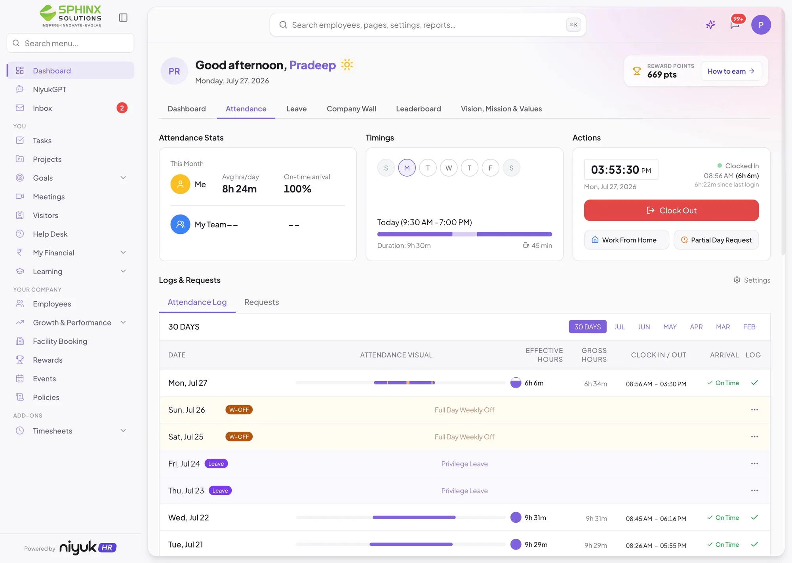
Attendance stats
Employees can see their attendance stats at a glance.
Requests
Status of Leave, WFH, and Regularization requests in one place.
Quick action buttons
Clock in and out, and request leave or WFH.
Attendance log
A weekly timing strip with a real-time shift-progress bar, and a 30-day log with a visual timeline per day.
Regularize attendance
You can regularize your attendance if you missed a clock in or clock out.
Resulting experience
Attendance stats
Employees can see their attendance stats at a glance.
Requests
Status of Leave, WFH, and Regularization requests in one place.
Quick action buttons
Clock in and out, and request leave or WFH.
Attendance log
A weekly timing strip with a real-time shift-progress bar, and a 30-day log with a visual timeline per day.
Regularize attendance
You can regularize your attendance if you missed a clock in or clock out.
◦ High fidelity design
The leaderboard
Resulting experience
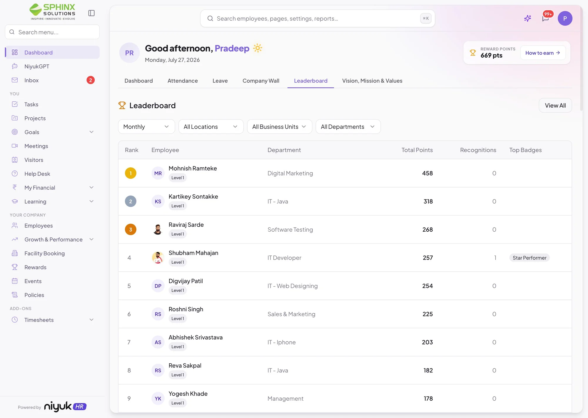
Filters
Filter by location, month, and department.
Leaderboard table
Employees can see who is leading the table and where they stand on the board.
Top badges
Employees can see which employees earned the top badges.
Resulting experience
Filters
Filter by location, month, and department.
Leaderboard table
Employees can see who is leading the table and where they stand on the board.
Top badges
Employees can see which employees earned the top badges.
◦ High fidelity design
Niyuk GPT
Resulting experience
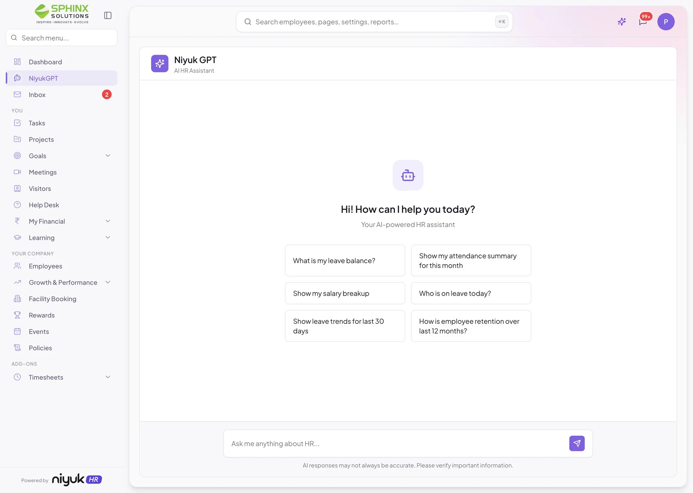
Niyuk GPT
This AI chatbot lets you access all details and perform actions on anything. You can check your leave balance, view your salary slip, apply for WFH, and see leave trends, all in one place.
Resulting experience
Niyuk GPT
This AI chatbot lets you access all details and perform actions on anything. You can check your leave balance, view your salary slip, apply for WFH, and see leave trends, all in one place.
◦ High fidelity design
Project dashboard
Resulting experience
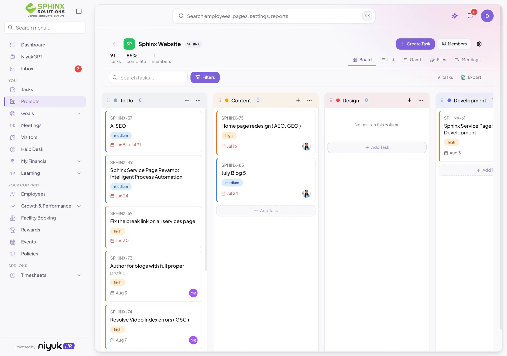
Project stats
Employees can see project stats like members, tasks completed, and pending tasks upfront.
Search & filter
Employees can easily search or filter the tasks they want to check.
Kanban board layout
A kanban board layout to manage the project easily.
Quick buttons
Quick buttons to create a new task in the project or add and remove members.
Excel export
Export all the project data into Excel format with one click.
Resulting experience
Project stats
Employees can see project stats like members, tasks completed, and pending tasks upfront.
Search & filter
Employees can easily search or filter the tasks they want to check.
Kanban board layout
A kanban board layout to manage the project easily.
Quick buttons
Quick buttons to create a new task in the project or add and remove members.
Excel export
Export all the project data into Excel format with one click.
◦ UX improvements
What changed, and why it mattered
Each shift below traces back to a specific piece of feedback or research finding—not a redesign for its own sake.
Request status lived in someone's email inbox, invisible until you asked.
A visible approval-chain breadcrumb on every request type, updated in place.
Clocking in meant navigating an unclear flow with no sense of hours worked.
One primary action with a live progress ring and remaining-time readout.
Financial data followed the same one-tap flow as everything else.
A deliberate “Verification required” step added after feedback that payslip and salary data needed friction the rest of the app intentionally avoids.
Moving between HR actions and daily work meant full page redirects.
Drawer-panel creation flows that preserve context across Tasks, Projects, and Meetings.
Recognition depended on someone remembering to post in Slack.
An always-on Company Wall and Leaderboard, auto-populated by default.
Every new client risked needing a bespoke design pass to fit their policies.
A reusable pattern language—badges, chains, drawers—configured per tenant without touching the UI itself.
◦ Validation
Validation & testing
Feedback from early adopter teams focused on five areas:
Time to complete daily attendance actions
Report download and refresh flows
Clarity of approval chain status across request types
How easily a new client can set up leave policies, approval processes, and branding without needing design help
Discoverability of secondary modules (Financial, Learning, Growth & Performance) from the sidebar
Iterating on feedback
Feedback has been incorporated iteratively. For example, the “Verification required” step gating financial data was added after early feedback that payslip and salary information needed a deliberate extra step, distinct from the rest of the app's low-friction philosophy.
Key usability issues identified
Early feedback pointed past visual polish and toward trust—users needed to see approval-chain progress without asking a manager directly. This reframed the request tables from a status list into a transparency feature, directly reducing manual follow-ups, and reinforced that the pattern needed to work identically for every client, not just the pilot organization.
◦ Outcomes
Measurable impact
Directional outcomes observed after rollout with early adopter teams:
◦ Key learnings
What I learned
Designing for many organizations at once, not one, changes the brief—every pattern has to be sturdy enough to be reconfigured per client without breaking.
Visibility, not just speed, is often the real fix for process friction—employees didn't need requests to be faster, they needed to see where they stood.
Reusing one pattern (status badges, approval chains, drawer panels) across a dozen different modules is what makes a large, multi-tenant surface area feel like one coherent product instead of many.
◦ Closing thought
Final thoughts
This project reinforced that consolidation is a design problem, not just an engineering one.
Five tools becoming one only works if the resulting product still respects how little time someone wants to spend inside it, and stays flexible enough to fit a different company's policies without a redesign. By keeping daily actions at the top of the hierarchy and letting transparency (not just automation) solve the trust problem, the goal was to turn a fragmented employee experience into one place worth opening every morning—for any company that adopts it.